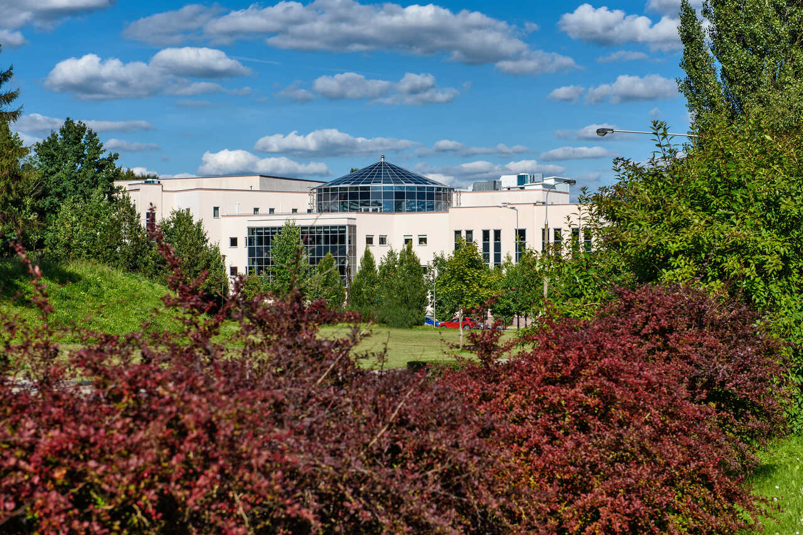

Internal Security - Bachelor's Degree
Bachelor's studies at the University of Warmia and Mazury in internal security covered topics related to national defense, criminal law, criminalistics, and crisis psychology. The program provided training in the activities of law enforcement agencies and institutions protecting citizens, crisis management, and the protection of classified information.
Criminalistics and Related Sciences in Criminal Proceedings - Master's Degree
Master's studies in criminalistics and related sciences in criminal proceedings focus on issues related to crime investigation techniques, evidence analysis, and criminal psychology. The program prepares students to work in law enforcement, detective agencies, and institutions involved in the judicial system and criminal procedures.